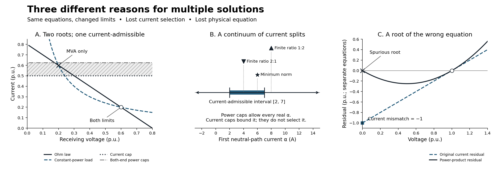

When a model admits unintended solutions
Page status: self-checked exact scalar witnesses and pinned local-solver comparisons; no general AC uniqueness or dynamic-stability result.
A solver returns a candidate for the equations and constraints that were supplied. Check that point before accepting it. Even a feasible point does not establish that the model describes the intended operating states, or that the point is unique. This lesson separates three mechanisms: changed admissibility, undetermined internal currents, and a lost physical balance equation. Keep equation roots, feasible operating points, local optima and global optima distinct throughout.

Panel A shows two exact intersections. Its shaded strip is allowed by the power caps but excluded by the current cap. Panel B is a current interval, not a probability distribution; marker heights separate labels and have no physical meaning. Panel C plots two different residual equations in their respective per-unit coordinates; the shared axis is not an assertion that current and power residual tolerances are interchangeable.
Predict: which constraint describes the intended limit?
For an RMS phasor port, $S=V\overline I$. At nonzero voltage,
\[|S|\le S_{\max}\quad\Longleftrightarrow\quad |I|\le \frac{S_{\max}}{|V|}.\]
Setting $S_{\max}=V_{\mathrm{nom}}I_{\max}$ matches a current limit only at the specified nominal voltage. Below nominal it allows more current; above nominal it can be stricter. Neither constraint is universally a relaxation of the other over an arbitrary voltage domain. Apparent-power ratings can be legitimate requirements in their own right; the error is substituting one for an intended conductor-current constraint without checking the domain and observation. Neither simple static cap is a complete conductor-temperature model.
Predict. Can this substitution admit an additional operating point even when apparent power is checked at both ends of a line?
A. Same circuit roots, different admissibility
Use a real resistive two-bus circuit in consistent per-unit coordinates:
\[E=\frac45,\qquad R=1,\qquad P=\frac3{25},\qquad 0\le V\le E.\]
Current is positive from the fixed-voltage source to the receiving bus. Retain both equations:
\[E-V=RI,\qquad VI=P.\]
Eliminating current gives
\[V^2-\frac45V+\frac3{25} =\left(V-\frac15\right)\left(V-\frac35\right)=0.\]
The factorisation exhausts the roots for this scalar model. It is not a conclusion inferred from two solver runs. Choose $I_{\max}=1/2$ and $V_{\mathrm{nom}}=1$, hence the proposed constant power cap is $S_{\max}=1/2$. Sending power is $EI$; receiving power magnitude is $VI$. Their difference is the physical resistive loss $RI^2$.
| Quantity | Lower-voltage root | Higher-voltage root |
|---|---|---|
| Receiving voltage $V$ | 0.2 | 0.6 |
| Current $I$ | 0.6 | 0.2 |
| Sending power $EI$ | 0.48 | 0.16 |
| Receiving power $VI$ | 0.12 | 0.12 |
| Resistive loss $RI^2$ | 0.36 | 0.04 |
| Current cap 0.5 | Fails | Passes |
| Both-end power caps 0.5 | Passes | Passes |
Claim LIMIT-MULTIPLICITY-001 concerns this changed admissible set. The lower root remains a solution of the circuit equations, but violates the intended current cap. It is not a new equation root created by a power inequality. These deliberately depressed voltages expose the distinction; they are not a proposal for normal service-voltage limits or a realistic feeder benchmark.
Two controls matter. Converting at the actual fixed sending voltage gives $S_{\max}^{\mathrm{from}}=0.8\times0.5=0.4$ and excludes the lower root in this series-only circuit. A justified receiving-voltage lower bound of 0.5 also excludes it. Neither observation makes nominal conversion safe in general, or justifies imposing a positive lower bound at every neutral or return.
Feasible points, local optima and global optima
With a constant feasibility objective, both power-limited points are global minimizers. With the objective $\min EI$, the higher-voltage root is the unique global minimizer among the two: 0.16 is less than 0.48. Both isolated feasible points are nevertheless local minimizers. Each has a small neighbourhood containing no other feasible point. An objective can distinguish global values without making a local method cross between disconnected feasible components.
The pinned Ipopt observations illustrate this: starts at 0.05 and 0.2 return the lower branch with LOCALLY_SOLVED, including under source-power minimization; starts at 0.4, 0.6 and 0.75 return the higher branch. These are version- and initialization-specific observations, not basins-of-attraction guarantees. The global comparison above follows from exact root enumeration, not from Ipopt's termination label.
For general positive $E,R,P$, the discriminant is $E^2-4RP$. A zero discriminant gives one distinct repeated root; a negative discriminant gives no real roots. Neither root counting nor the sign of a static equation derivative establishes dynamic stability. A dynamic load/controller model would be needed.
B. Ratings bound a current mode without selecting it
Two parallel ideal neutral paths have equal zero endpoint voltages and a prescribed total through-current of 12 A. Full KCL is retained:
\[I_1+I_2=12,\qquad (I_1,I_2)=(\alpha,12-\alpha),\quad \alpha\in\mathbb R.\]
Every terminal power is zero. Nonnegative apparent-power caps therefore impose no restriction on $\alpha$. This mode is a current circulation, not an arbitrary voltage-reference shift: changing it changes the conductor currents that a rating or measurement would observe. The quotient and observation lesson compares this current family with a removable floating reference and a delta terminal-map kernel eliminated by the device laws.
Retaining $|I_1|\le7$ A and $|I_2|\le10$ A restricts $\alpha$ to $[2,7]$ A. It bounds the admissible family but does not give a unique split. This extends the vanishing-impedance lesson, whose ratio-dependent selection is claim PRACTICE-SHORT-001.
| Additional model or objective | First/second current | Meaning |
|---|---|---|
| Ideal paths and current caps only | $(\alpha,12-\alpha)$, $2\le\alpha\le7$ | Continuum remains |
| Positive resistances $\varepsilon,2\varepsilon$ | 8 A / 4 A | Violates the first current cap |
| Positive resistances $2\varepsilon,\varepsilon$ | 4 A / 8 A | Satisfies both caps |
| Ideal paths, caps, and $\min(I_1^2+I_2^2)$ | 6 A / 6 A | Unique objective-selected point |
The finite-resistance comparisons keep the port current-driven. With one endpoint at zero, the other has voltage $8\varepsilon$ V when $\varepsilon$ is expressed in ohms. This voltage tends to zero; it is not fixed at zero for positive resistance. Keeping both endpoint voltages at zero and requiring nonzero resistive current would be a different, inconsistent problem.
The minimum-norm selection follows from $\alpha^2+(12-\alpha)^2=2(\alpha-6)^2+72$ and is inside the cap interval. It is not the current-sharing law of either finite-resistance circuit. A small positive weighting of this objective still selects 6 A / 6 A when the remaining objective is constant along the ideal current mode. Regularization can choose one answer without recovering the physical information removed by idealization.
C. A root of the wrong equation
A prescribed 1 A injection feeds a 1 S resistor to ground. In normalized coordinates its current law and original KCL are
\[I=V,\qquad r_I=I-1=0.\]
The unique state is $V=I=1$. Replace KCL by its power product, however, and
\[r_S=V(I-1)=V(V-1)=0\]
also admits $V=I=0$. At that point the original current residual is −1, although the power residual is zero. Minimizing supplied power $V\times1$ in the faulty model selects this spurious root globally on $0\le V\le2$. This is the zero-voltage balance boundary, claim FORMULATION-ZERO-001; the multiconductor consequences are discussed in Geth's versioned zero-voltage manuscript [28].
The faulty scalar equation has derivative $2V-1=-1$ at the spurious root. Thus the wrong model can have an isolated, nonsingular, accurately computed solution. Jacobian rank and numerical convergence do not authenticate the original physics. Conversely, with zero injection, $V^2=0$ has a single repeated root even though its derivative is zero: rank deficiency alone does not prove a continuous family.
Adding a current cap does not restore lost KCL. For example $|I|\le0.5$ still admits the spurious zero-current point while excluding the physically required 1 A point. Even $|S|\le |V|I_{\max}$ is vacuous at zero voltage. Restore the current equation or another demonstrably equivalent relation over the full required domain; a convenient positive voltage floor is not a universal repair.
D. Constraint convexity depends on the retained coordinates
Predict. Does a physically appropriate current limit have to be harder to optimize over than an apparent-power cap? No. Claim LIMIT-CONVEXITY-001 distinguishes the geometry of an individual rating constraint from that of the complete circuit problem. Let $S=P+\mathrm jQ$, $V=v_r+\mathrm jv_i$, $I=i_r+\mathrm ji_i$, with fixed nonnegative ratings.
| Retained coordinates | Apparent-power limit | Current limit |
|---|---|---|
| Explicit $P,Q$ and magnitude $v=\lvert V\rvert\ge0$ | $\lVert(P,Q)\rVert_2\le S_{\max}$: convex disk | $\lVert(P,Q)\rVert_2\le I_{\max}v$: convex second-order cone |
| Explicit $P,Q$ and squared magnitude $w=\lvert V\rvert^2\ge0$ | Same convex disk | $P^2+Q^2\le I_{\max}^2w$: convex quadratic inequality, conic-representable |
| Rectangular $V,I$ | $(v_r^2+v_i^2)(i_r^2+i_i^2)\le S_{\max}^2$: generally nonconvex | $i_r^2+i_i^2\le I_{\max}^2$: convex disk |
The first two current-limit forms follow from $|S|=|V||I|$ at nonzero voltage. At zero voltage they force $P=Q=0$ but cannot validate a hidden physical current: retain the original current laws and KCL, as in B and C.
For the convexity proofs, norm balls and second-order cones are convex; an affine preimage of a convex set is convex [29]. In the $w$ form, $P^2+Q^2-I_{\max}^2w$ is a convex function. The squared-magnitude expression $P^2+Q^2-I_{\max}^2v^2$ has an indefinite Hessian when $I_{\max}>0$, but with $v\ge0$ its nonpositive sublevel set is still the cone in the table. A Hessian test on one algebraic representation is not a proof that this feasible set is nonconvex.
Challenge with a midpoint. In real positive current-voltage coordinates, take $S_{\max}=1$ and the two points
\[(V,I)=\left(\frac9{10},\frac{10}9\right),\qquad (V,I)=\left(\frac{11}{10},\frac{10}{11}\right).\]
Both have $VI=1$. Their midpoint is $(1,100/99)$, whose apparent power exceeds one. Thus the cap is nonconvex in current-voltage coordinates even within a 0.9–1.1 voltage interval, without using zero voltage. In power-magnitude coordinates the endpoints are $(P,Q,v)=(1,0,0.9),(1,0,1.1)$; their midpoint is $(1,0,1)$, recovering current 1. The nonlinear change of coordinates does not preserve midpoints. It does not change the physical limit or create roots when the exact coupling laws and the nonzero-voltage domain are preserved.
What “power-voltage formulation” leaves unspecified
A formulation label alone is insufficient. Three qualifications matter:
- If branch powers are eliminated and written as nonlinear functions of bus voltages, their apparent-power disk is pulled back through a nonlinear map and need not remain convex. Retaining explicit powers moves the nonconvexity into the coupling equations; it does not remove it.
- For a fixed linear branch, current is affine in rectangular bus voltages: $\mathbf i=A\mathbf v+b$. Its limit $\|A\mathbf v+b\|_2\le I_{\max}$ is convex even with no explicit current variables. This useful property also applies in a power-balance formulation using those rectangular voltages. Variable admittances/taps and polar substitutions require their own analysis.
- If a current is instead eliminated using its port power, retaining $P,Q,v_r,v_i$ gives $P^2+Q^2\le I_{\max}^2(v_r^2+v_i^2)$, generally a nonconvex set. For $I_{\max}=1$, points $(P,Q,v_r,v_i)=(1,0,3/5,\pm4/5)$ pass, but their midpoint $(1,0,3/5,0)$ fails. All three voltages are nonzero.
Introducing $v$ or $w$ alongside rectangular components does not resolve the complete problem's nonconvexity: the exact identities $v^2=v_r^2+v_i^2$ or $w=v_r^2+v_i^2$ are themselves generally nonconvex constraints. Dropping or relaxing such identities changes the model and needs a separate exactness argument.
The pedagogical conclusion is that physical suitability, constraint convexity, and solution multiplicity are separate questions. Convex current limits can intersect nonconvex circuit equations in disconnected feasible points, as in A. A convex apparent-power disk can still implement the wrong intended rating. A nonconvex constraint alone does not imply that a particular complete model has multiple solutions. Even the convex current interval in B has multiple minimizers under a constant objective. The exact checker records the two nonconvex midpoint certificates above; the positive convexity statements follow from the analytic norm/cone arguments, not from finite sampling.
Diagnose the mechanism before choosing a remedy
| Mechanism | What changes or disappears? | Appropriate check | What the check does not establish |
|---|---|---|---|
| A: nominal power cap replaces a current cap | Admissible subset of the same circuit roots | Evaluate both endpoint powers and conductor currents at every enumerated root | General uniqueness or dynamic stability |
| B: parallel paths become ideal | Constitutive current-sharing relation | Parameterize the KCL family; retain member limits and compare declared finite ratios | A unique physical split from a minimum-norm objective |
| C: KCL is replaced by a power product | Original balance information at zero voltage | Recompute original current residuals, including at zero voltage | Model validity from convergence or Jacobian rank alone |
These are different interventions. Restoring a current rating repairs the stated constraint substitution in A, only bounds the family in B, and cannot restore the missing equation in C.
Reproduce and challenge the result
python3 experiments/lessons/solution_multiplicity.py --check
python3 experiments/lessons/solution_multiplicity.py
python3 scripts/check_bmopf_integration.py --bmopf-root ../BMOPFTools.jlThe input fixture is experiments/lessons/solution_multiplicity.json. The exact Python checker uses rational arithmetic and checks the committed, source-hash-bound experiments/generated/solution-multiplicity.json. It includes both-end ratings, objective comparisons, discriminant controls, reversed current, an empty rating interval, two finite-resistance ratios, the lost-KCL residual, and coordinate-dependent midpoint certificates. It deliberately refuses irrational square roots instead of silently turning this exact witness into an approximate general root finder.
The Julia companion runs in the existing immutable integration environment. Its solution-multiplicity.json run output records all attempted solves, statuses, starts, constraints, independent residuals, versions and source/environment hashes. It first uses declared intervals $[0.1,0.3]$ and $[0.5,0.7]$ to isolate the known roots, then records unrestricted multistart observations separately. The current-limited lower interval is analytically infeasible; any returned iterate is diagnostic, not an accepted operating point. Both roots of the faulty KCL model are likewise isolated and checked against the original equation.
The original Julia companion above contains book-owned scalar models in JuMP. The native candidate companion below adds a separate package implementation comparison; the published integration pin and MCP execution surface stay unchanged. The figure can be regenerated with Matplotlib 3.10.8 using experiments/lessons/render_solution_multiplicity.py; its curves illustrate the exact artifact and do not establish completeness by sampling.
Native BMOPFTools comparison with original-equation auditing
The local direct-audit candidate now has a package-owned fixture and executable example for the same circuit. This is an actual native source, series line and constant-power load, assembled through the public staging APIs. The book companion checks that its inputs agree with the exact witness above under explicit bases $V_{\mathrm{base}}=1$ V and $I_{\mathrm{base}}=1$ A: hence $Z_{\mathrm{base}}=1$ Ω and $S_{\mathrm{base}}=1$ VA. The numerical values agree; the native fixture uses SI quantities rather than silently treating per-unit numbers as volts and amperes.
There is no need to add a generator to represent this fixed-voltage source. With a real source $E$, positive real $R$ and native complex receiving voltage $V$, the load satisfies $S=V\overline{(E-V)/R}$, so $\operatorname{Im}S=E\operatorname{Im}V/R$. Its prescribed zero reactive power forces $\operatorname{Im}V=0$. The exact quadratic proof therefore applies to this native single-conductor circuit too; root completeness still comes from the equations, not multistart coverage.
| Native experiment | Emitted-model audit | Intended current-model audit |
|---|---|---|
| Low branch, both-end power caps | Passes source/load/line laws, KCL, power and caps | Fails both endpoint current caps by 0.1 A |
| High branch, both-end power caps | Passes | Passes |
| High branch, current cap | Passes | Passes |
| Low isolating interval, current cap | No accepted solved point | No accepted solved point |
audit_solution evaluates the native input and supplied result independently of the builder's constraints. It reports complete coverage for this deliberately small supported circuit. This is independent equation evaluation with a shared schema, not independent software reproduction or validation of a whole feeder. The package also tests missing endpoint currents, an altered source injection, both-end rather than receiving-only power checks, and a current-cap boundary. A known overload takes precedence over missing coverage in the older linear API: the outcome can be failed with incomplete coverage, not merely indeterminate. Never discard a known violation because other checks are missing.
The branch-isolating real-voltage intervals are additional experimental controls, checked separately; they do not extend the candidate audit's native bus-voltage-bound coverage. The failed local attempt is retained as diagnostic output. The exact root/current comparison establishes the infeasible interval; LOCALLY_INFEASIBLE is not used as its proof.
The recorded native multistart run also changes the outcome of the 0.05 V start: it reaches the higher branch, whereas the standalone model above reaches the lower branch. A 0.2 V start reaches the lower branch in both, including with the source-power objective. Auxiliary variables, constraint representations and starts differ. Matching one voltage start does not make two optimization runs identical or give them the same basins of attraction.
Use the candidate environment instructions in the repository experiments/integration/README.md and its exact clean commit, then run:
julia --startup-file=no --project="$MGB_AUDIT_ENV" \
experiments/lessons/verify_native_multiplicity.jl /tmp/native-multiplicity.jsonThe output binds the book witness, package fixture/example, candidate Git revision/tree and Julia environment hashes. It retains all fourteen attempted solves, status and coverage evidence. The candidate is local and unpublished; ordinary clones cannot fetch it yet, and the published MCP verification route does not expose this audit. General generator, transformer and bus-bound coverage remain separate roadmap items. The next explicit-neutral and shunt example extends this controlled experiment to two coupled conductors and separate shunt factors, with finite receiving-neutral voltage and distinct current observations.
Transfer exercise. First change only $I_{\max}$ from 0.5 to 0.3 while keeping $V_{\mathrm{nom}}=1$ and recomputing $S_{\max}$. Do both roots still pass the power caps? Then change only the load to $P=4/25$ in the original branch case. How many distinct roots remain? Check your reasoning: the sending-end 0.3 power cap rejects the lower branch (0.48), while the higher branch passes (0.16); at $P=4/25$ the quadratic has the single repeated root $V=I=0.4$. Do not count the repeated factor twice or infer dynamic stability from it.
Before calling a solution unintended, name the intended equations, constraints, observations and objective. An overloaded circuit root, an ideal circulation, a coordinate symmetry and a KCL-violating root are different findings. The delta-coil lesson supplies another distinction: unchanged terminal observations can hide violated internal device laws.